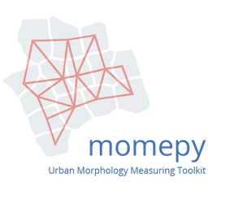

Momepy is a project allowing advanced quantitative analysis of urban morphology. Embracing principles of Urban Morphometrics (Dibble, 2017), this toolkit aims to provide tools for the development of complex frameworks for a description of urban structures.
momepy stands for Morphological Measuring in Python
Momepy is a result of ongoing research of Urban Design Studies Unit (UDSU) supported by the Axel and Margaret Ax:son Johnson Foundation as a part of “The Urban Form Resilience Project” in partnership with University of Strathclyde in Glasgow, UK.
Comments, suggestions, feedback, and contributions, as well as bug reports, are very welcome.
You can install momepy using Conda from conda-forge (recommended):
conda install -c conda-forge momepy
or from PyPI using pip:
pip install momepy
See the installation docs for detailed instructions. Momepy depends on python geospatial stack, which might cause some dependency issues.
To cite momepy please use following software paper
published in the JOSS.
Fleischmann, M. (2019) ‘momepy: Urban Morphology Measuring Toolkit’, Journal of Open Source Software, 4(43), p. 1807. doi: 10.21105/joss.01807.
BibTeX:
@article{fleischmann_2019,
author={Fleischmann, Martin},
title={momepy: Urban Morphology Measuring Toolkit},
journal={Journal of Open Source Software},
year={2019},
volume={4},
number={43},
pages={1807},
DOI={10.21105/joss.01807}
}
Contributions of any kind to momepy are more than welcome. That does not mean new code only, but also improvements of documentation and user guide, additional tests (ideally filling the gaps in existing suite) or bug report or idea what could be added or done better.
All contributions should go through our GitHub repository. Bug reports, ideas or even questions should be raised by opening an issue on the GitHub tracker. Suggestions for changes in code or documentation should be submitted as a pull request. However, if you are not sure what to do, feel free to open an issue. All discussion will then take place on GitHub to keep the development of momepy transparent.
If you decide to contribute to the codebase, ensure that you are using an
up-to-date master branch. The latest development version will always be there,
including a significant part of the documentation (powered by sphinx). The
user guide is located in the separate GitHub repository
martinfleis/momepy-guide and is
powered by Jupyter book.
Details are available in the contributing guide.
If you have a question regarding momepy, feel free to open an issue on GitHub. Eventually, you can contact us on dev@momepy.org.